Network security
"Mikhail Volkhov"
Created: 2016-10-25 Tue 19:59
Table of Contents
Disclaimer
I'm by no means a computer security specialist. Both these slides and the lecture itself can contain pure bullshit.
BTW these slides & plain html version are available here:
Network security in general
Network security by definition is a set of policies that are used to prevent and monitor unauthorized access, misuse, … or denial of network-accessible resources.
Different types of attacks
- Passive
Intercepts data traveling through the network:
- Tapping (wiretapping)
- Port scanning
- Active
Intruder imitates commands to disrupt network's normal state.
- Denial-of-service
- MITM (Man-in-the-middle)
- Injections (SQL)
- DNS spoofing
- .. lots of them
What do we have do to then?
Different attacks need different solutions. Most general advices:
- OS level: Using OS that is aware of last CVE updates (last kernels etc). Using different environments for service nodes. Hiring good system administrator.
- Application level sanity (e.g. blocking arbitrary user to make you allocate GBs of memory on a simple HTTP request).
- Transport/network security: using solutions that encrypt/route/mix your traffic.
- IT security audits. Automatic testing with audit software (argmitage's hail mary etc).
We'll mostly speak about cryptography applications further.
Security on different network levels
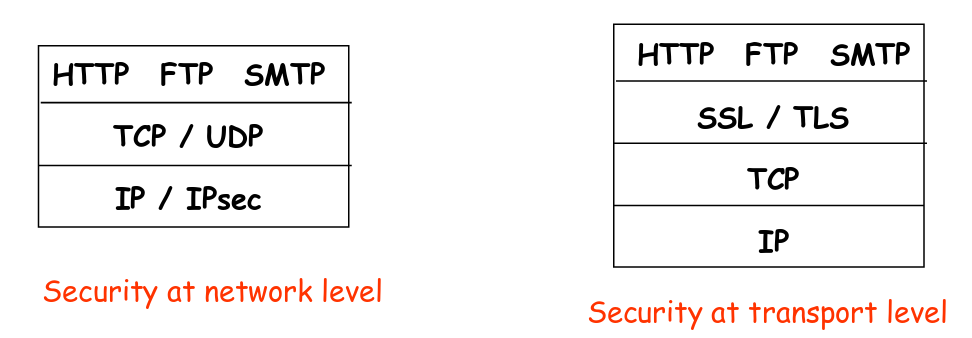
- Network level security (IPsec) works with everything IP carries inside (UDP, TCP, ICMP).
- IPsec protects whole IP payload, including headers.
- Both are independent of content inside (payload).
Topics for today
- IPsec: how to encrypt ip and build VPNs (network level security)
- TLS/SSL: security on the transport level.
IPsec
In general
- Set of protocols for securing network connection on ip level.
- Very complicated, lots of different knobs and modes.
- AH (Authentication header) and ESP (Encapsulating Security Payload) protocols.
- Wide range of cryptography primitives for auth/encryption supported.
- Tunnel mode versus Transport mode.
- Manual keys exchange vs IKE.
Security on ip level encompasses three functional areas:
- Authentication and integrity checks
- Data is sent from the user you think it's sent from.
- It's not altered.
- Something is done to prevent replay attacks.
- Encryption – anything between is secured.
- Key management – secure exchange of keys to encrypt.
Motivation
Companies often want private networks for security.
- Physical local network – expensive. Separate routers, links, DNS infrastructure.
- VPN – all traffic is sent over the Internet, encrypted outside of local networks, logically separated from the other traffic.
Benefits of IPsec:
- Absolutely transparent to applications:
- No need to have explicit authentication system as it's done in VPN solutions (which includes issuing auth info and then revoking it when, for example, employee leaves organization).
- Software independence – IPsec is implemented on OS level and routers don't have much to do with one's userspace (compare with (SSL-/SSH-/PGP-based VPN system).
- Adding cool features to routing architecture (can ensure that router and neighbour advertisements come from authorized routers; same for redirect messages, routing updates)
IP Header
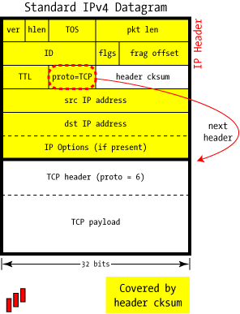
ver = 4. IPsec supports IPv6 as well, but it won't be covered in this lecture.hlen– length of header (minimum 5, can be more to include ip options).pkt len– length of payload (up to \(2^{16}\) bytes).ID,frag offset– fragmentation-related fields.proto– protocol of carried data.- Checksum is non-secure trivial algorithm (fast & simple tho).
Proto codes
Defined by Internet Assigned Numbers Authority (IANA): Full list
| Protocol code | Protocol Description |
|---|---|
| 1 | ICMP — Internet Control Message Protocol |
| 2 | IGMP — Internet Group Management Protocol |
| 4 | IP within IP (a kind of encapsulation) |
| 6 | TCP — Transmission Control Protocol |
| 17 | UDP — User Datagram Protocol |
| 41 | IPv6 — next-generation TCP/IP |
| 47 | GRE — Generic Router Encapsulation (used by PPTP) |
| 50 | IPsec: ESP — Encapsulating Security Payload |
| 51 | IPsec: AH — Authentication Header |
IPsec protocol types
- Authentication Header (AH) protocol:
- Source authentication, data integrity
- Encapsulation Security Protocol (ESP)
- Authentication, integrity, confidentiality
- Much more popular
- Host/transport mode – data is exchanged between two hosts.
- Tunnel mode – inner payload is IP datagram, so after it's unwrapped (decrypted, checked), it's sent to the destination ip.
Four combinations of protocol modes
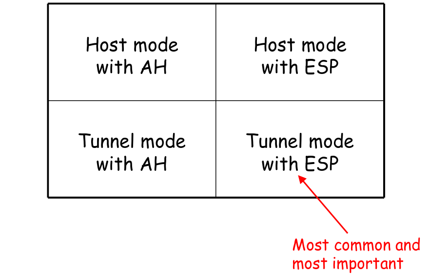
Authentication header
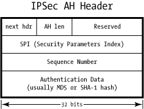
next hdr– protocol type of the payload.reserved– must be filled by zero by sender, ignored by recipient. For the future use.SPI– value used to identify the security association. That implies a choose of hash algorithm, secret data and other parameters.Sequence number– anti replay protection, included in the Authentication DataAuthentication Data– hash of many packet fields (including both payload and IP headers).
Security associations (SA)
- Establishment of shared security atributes between two entities. Simplex (one-way): one SA per algorithm/direction.
- Unlike IP, IPsec is connection-oriented.
- SA is uniquely identified by the following tuple: \(SA ~ (SPI, IPdest, protId)\)
- SPI (Security Parameters Index): local significance id of SA set on receiver side.
- IPDest – router address, broadcast,..
- \(protId \in \{AH, ESP\}\)
- Internet Key Exchange (IKE) is a protocol used for setting SA.
- Security Association Database (SAD) – local database that stores \(≈ 2n\) entries for \(n\) neighbours (\(n\) for sending, \(n\) for receiving).
Parameters associated with SA (lots of them):
- AH/ESP Information – authentication, encryption methods and algorithms, keys, their lifetimes.
- Sequence number counter.
- Lifetime of the SA.
- IPsec protocol mode (tunnel/transport).
- Routing restrictions.
- Many key-exchange parameters.
IPsec AH Transport mode
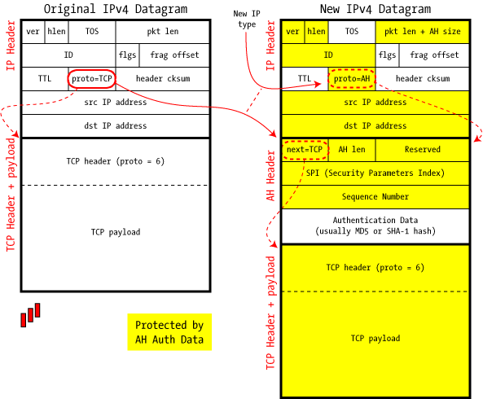
- Just a secure IP connection, no tunneling.
- Unwrap the packet, replace
protofield of IP package and you're ready.
IPSec AH Tunnel mode
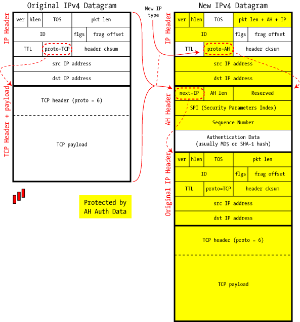
- Fair tunnel mode.
- Authentication Data secures whole encapsulated IP datagram.
- After the packet is processed and unpacked, it's routed elsewhere.
Transport/tunnel difference
- There's no explicit mode field in IPsec. What distinguishes modes
is
nextfield in IPsec header. - Any value that doesn't equal
IP(e.g.TCP,ICMP,UDP) is transport mode. - Top level of IP datagram doesn't change \(⇒\) intermediate routers treat all kinds of IPsec/AH traffic identically without deeper inspection.
Authentication algorithms
- AH carries Integrity Check Value in Authentication Data field of the header. It's usually MD5 or SHA1.
- Because users share keys with the help of CA, they can use wider range of crypto algorithms. HMAC (Hashed Message Authentication Code) is popular one.
- HMAC computes hash given message and a shared symmetric secret key, so noone without its knowledge can check the hash.
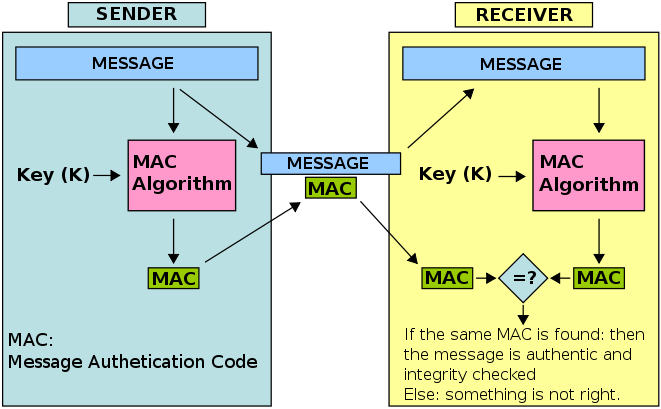
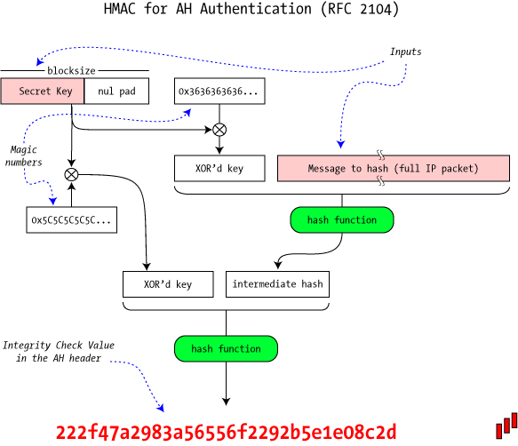
AH/Nat incompatibility
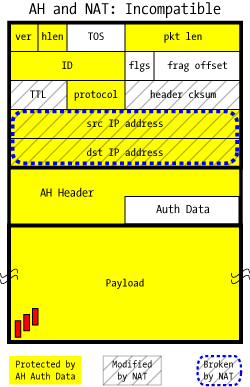
- TTL is always changed so it's not included into Authentication Data field. Header checksum is re-calculated on hop, it's not in the AD field either.
- NAT requires IP source/destination rewriting, but they are included into Authentication Data.
- Therefore AH in both transport and tunnel modes is completely incompatible with NAT
- ESP handles NAT way better, but it's still challenging (e.g. NAT requires TCP info which is encrypted and thus not accessible).
Encapsulating Security Payload (ESP)
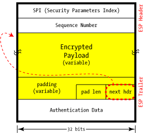
- Provides authenticity, integrity and confidentiality. ESP
Auth-only or Encryption-only modes can be used (e.g. no
Authentication data field or using
NULLencryption algorithm), but strongly discouraged. Presense/absense of Authentication Data is determined by looking at SPI. - Surrounds the payload rather then preceeding.
paddingis used for encryption algorithms to match their block size.pad lenis length of a padding.- Different supported encryption algorithms: AES, 3DES, Blowfish.
- Authentication Header covers ESP Header and encrypted payload.
- Type of payload (
nextfield) is encrypted inside too. Headers don't reveal any info about the type.
ESP Transport mode
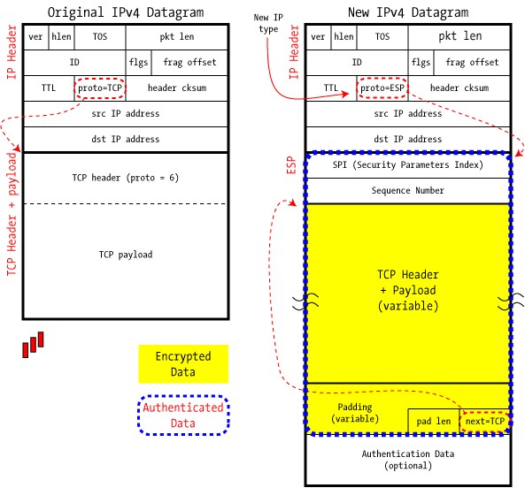
ESP Tunnel mode
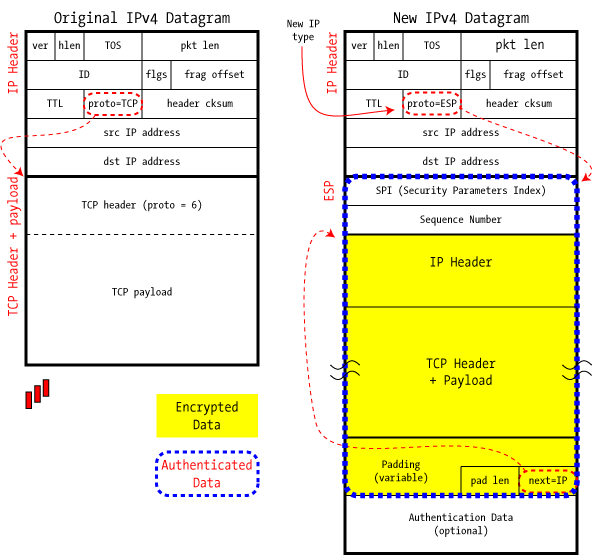
VPN
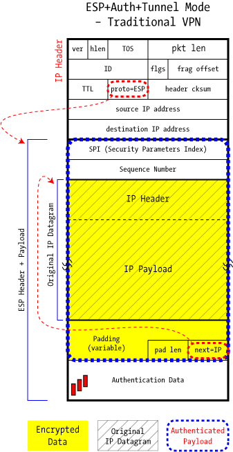
- Purpose: join two trusted networks across an untrusted intermediate network.
- Which modes are available?
- ESP with authentication: doesn't authenticate mutable parts of IP header, applies encryption before authentication.
- ESP w/o authentication inside AH: authenticates mutable parts of IP header, but 2 CA.
- AH inside ESP w/o authentication: authentication header is protected by encryption, authentication applies to the plaintext (no need to recompute if reencrypted).
- Which one is best?
- AH NAT whoop-whoop \(⇒\) definitely not the thing we want to have outside, so (2) is out.
- (3) is too complex, plus still 2 CA.
- In fact, IP header protection doesn't matter so much (intermediate routers can't check header integrity because of HMAC, anyway ESP can provide this security by wrapping IP datagram).
- Full ESP in tunnel mode is a winner.
- There are three major families of VPN in wide usage today: SSL (OpenVPN, Cisco's AnyConnect), IPSec (OS level, ipsec-tools, libre/open/strongSwan), PPTP (Vulnerabilities list).
IKE in short
- Manual establishment of IPsec SAs is impractical, so automated secret exchange algorithms come in handy.
- Authentication can be done it two ways:
- Pre-Shared Secret (PSK): 2 SAs (authentication & encryption keys) are generated with symmetric encrypted connection.
- Public Key Infrastructure (PKI) (X.509/PKCS#12 certificates + asymmetric cryptography) – same as TLS handshake.
- Two-phased algorithm:
- Establishing bi-directional IKE SA (not IPsec SA):
- Based on DH exchange (Oakley) – expensive, but done once.
- Main mode vs aggressive mode – security/speed balance.
- Derives 3 keys: for phase 2, for encryption and for authentication.
- Using random and key from phase 1 to create IPSec shared keys for AH and ESP SAs. Quick, can be done often.
- Establishing bi-directional IKE SA (not IPsec SA):
Summary
Features:
- IKE to establish shared keys, algorithms, SPI numbers.
- AH vs ESP, Tunnel vs Transport, ESP tunnel is used mostly.
- Security Associations (SA) – network-level logical channel.
Disadvantages:
- Excessive complexity of protocol \(⇒\) compatibility issues, broken algorithms.
- AH doesn't work with NAT.
- Authenticates host, not user.
TLS/SSL
General properties
- Transport/application-level security protocol (encryption, authentication, integrity), over TCP (DTLS – over UDP).
- SSL 1.0 – 3.0 (up to 1996) – old standards, TLS 1.0-1.2 current. Both refered to as SSL sometimes. TLS 1.2 is mostly used, TLS 1.3 features x25519, removing md5/SHA-224 support, removing support for broken older elliptic curves.
- Lots of different supported algorithms.
- Libraries: openssl (2/3 of all web servers usage), libressl (openssl fork), gnutls. Browsers use their own implementation (NSS in firefox, SChannel (proprietary) on win).
Establishing a secure connection
- Client always initiates the connection.
- Handshake protocol, that has achieves following objectives:
- Establish protocol variant to be used from the supported list (SSLv3, TLSv1, TLSv1.1, TLSv1.2). Client suggests, server chooses.
- Send authentication data to user (X.509 certificate).
- Establish a session ID.
- Negotiate a Cipher Suite: key-exchange algo, bulk-data encryption algo. Key exchange usually uses RSA/DSA/ECC (expensive), so bulk data is encrypted with symmetric encryption algo (key is transferred using asymmetric).
X.509 Certificate
- Digital certificate – handy way to state somebody owns a public key.
- Issued by Certificate Authority (CA): GlobalSign, Comodo, LetsEncrypt (cross-signed by IdenTrust).
- PKI (public key infrastructure) – policy that regulates certificate distribution and usage (including creation, web of trust, revocation).
- Trusted CA list is maintained by application. On linux can be
found under
/etc/ssl/certs/ca-certificates.crt. Browsers use their own lists. - Certificates are signed by other certificates, that propagates trust.
- Certificates can be revoked, system holds list of revoked certs (CRL – certificate revocation list). This list is held on CA side and updated every N (~12) hours.
- File format of owned keys:
- Key is
.pem,.key– PEM format of DER,.der– raw, not widely used. PEM is ascii shielded. - Certificate is
.crt,.cer,.pem,.deror.p12. - Files can be encrypted (private with AES) or unencrypted.
- Sometimes cert chain is also attached.
- Key is
Obtaining certificate
- User generates keypair and requests CA server.
- CA responds with its certificate.
- User collects information to obtain cert: email address, fingerprints, etc. Pays moneyz (<100$ or free).
- User sends this data to CA signing with CA's public key.
- CA verifies user's data and sends this certificate to user.
Certificate structure

Certificate example (1)
Certificate: Data: Version: 3 (0x2) Serial Number: bb:7c:54:9b:75:7b:28:9d Signature Algorithm: sha1WithRSAEncryption Issuer: C=MY, ST=STATE, O=CA COMPANY NAME, L=CITY, OU=X.509, CN=CA ROOT Validity Not Before: Apr 15 22:21:10 2008 GMT Not After : Mar 10 22:21:10 2011 GMT Subject: C=MY, ST=STATE, L=CITY, O=ONE INC, OU=IT, CN=www.example.com Subject Public Key Info: Public Key Algorithm: rsaEncryption RSA Public Key: (1024 bit) Modulus (1024 bit): 00:ae:19:86:44:3c:dd... ... 99:20:b8:f7:c0:9c:e8... 38:c8:52:97:cc:76:c9... Exponent: 65537 (0x10001)
Certificate example (2)
X509v3 extensions: X509v3 Basic Constraints: CA:FALSE Netscape Comment: OpenSSL Generated Certificate X509v3 Subject Key Identifier: EE:D9:4A:74:03:AC:FB... X509v3 Authority Key Identifier: keyid:54:0D:DE:E3:37... Signature Algorithm: sha1WithRSAEncryption 52:3d:bc:bd:3f:50:92... ... 51:35:49:8d:c3:9a:bb... b8:74
TLS handshake

- ClientHello: list of protocol versions/variants supported, the supported cipher suites in preferred order and a list of compression algorithms (typically NULL).
- ServerHello
- Returns the selected protocol variant/version number, cipher suite and compression algorithm.
- Also sends 32 byte nonce to compute symmetric keys.
- Creates a session ID if it was 0 in ClientHello, or uses proposed session ID if it was not recently used.
- Certificate:
- Server sends X.509 certificate to user.
- Bundle or cert chain (cross-signed cert).
- Validation on user side.
- ServerDone: end of the server part, invites the Client to continue the protocol sequence.
- ClientKeyExchange:
- Computes pre-master key using the server and client nonces.
- Client shares this key, encrypting it with server's cert public key.
- Both sides then independently compute master key. Required session keys are derived from it.
- ChangeCipherSpec: message that states that every subsequent traffic will be encrypted using selected algo. Usually concatenated with ClientKeyExchange message.
- Finished: contains every previous message (sent/received) encrypted using negotiated bulk encryption protocol. If server can verify it, the connection is set up. If not good, response is Alert.
TLS record
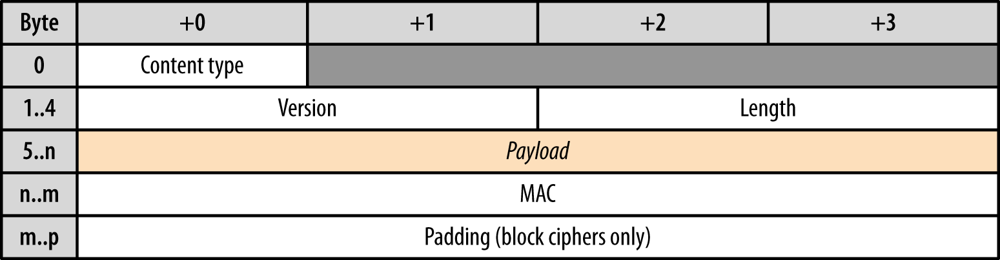
content typedefines type of message – handshake (22), application (23), alert (21).version: SSL/TLS version.length: the length of Payload, Mac and Padding.- With application type, everything `length` covers is encrypted.
TLS applications
Everything related to data transfer itself is specific to tls application. Usually payload is encrypted using symmetric encryption scheme.
- HTTPS: 45% of page loads uses it (measured by Firefox Telemetry)
- Mail over TLS: SMTPS, POP3S, IMAPS
- File Transfer Protocol (FTP) over TLS: FTPS
- Secure web sockets (WSS).
- LDAPS to store your passwords.
That's all, thank you
Resources
- http://www.montefiore.ulg.ac.be/~leduc/cours/ISIR/GSRI-ch5.pdf
- http://unixwiz.net/techtips/iguide-ipsec.html
- https://tools.ietf.org/html/rfc4302
- http://unix.stackexchange.com/questions/97244/list-all-available-ssl-ca-certificates
- http://serverfault.com/questions/62496/ssl-certificate-location-on-unix-linux
- http://www.zytrax.com/tech/survival/ssl.html
- https://www.symantec.com/connect/blogs/how-does-ssl-work-what-ssl-handshake
- https://sites.google.com/site/amitsciscozone/home/security/digital-certificates-explained
- http://blog.fourthbit.com/2014/12/23/traffic-analysis-of-an-ssl-slash-tls-session